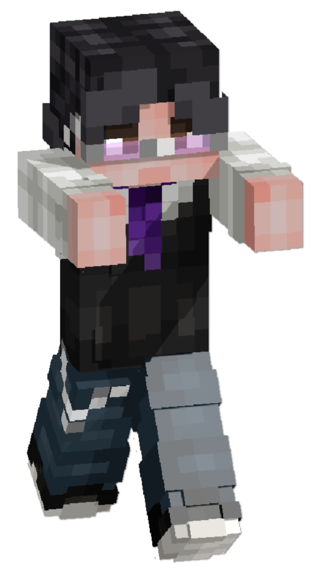

окунитесь в атмосферу ванильного minecraft сервера с элементами role-play — без привилегий, приватов и лишних дополнений 🍀
ПОДРОБНЕЕ АНКЕТА МАГАЗИНэто большое и дружелюбное сообщество. на нашем сервере идеально себя почувствуют любители ваниллы, ведь мы бережно внедрили новые механики и фишки, которые дополняют классическую ваниллу и делают её еще увлекательнее.

уникальные плагины на нашем сервере придают игре разнообразие и интерес, такие как role-play команды, варка алкоголя (brewery), банковская система, мини-игры внутри сервера, и многое другое.